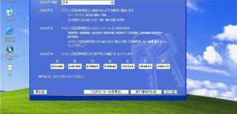
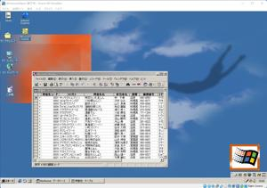
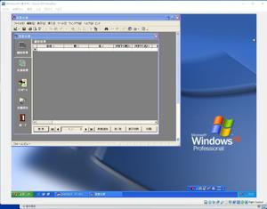

うるがいの話 ある日
最新: Windows３２ビットＯＳ【うるがいの話 ある日】とは 一日だけのプログです
『うるがいの話』の最新一日だけのプログで、通信料が少なく経済的だ。カニの画像をクリックすると全ての日付が載る『うるがいの話』サイトを表示します
|
|
【うるがいの話】 うるがい(ｳﾙｶﾞｲ urugai)とは、『もずくがに』の名前でとても大きくなります。 |
|---|---|
|
|
【カミマヤーの話】 猫のことを方言でマヤーといいます。カミマヤー（kamimayaa）とは、神の猫のことです。 |
|
【たながぁの音楽】 たながぁ（ﾀﾅｶﾞｰ tanagaa）とは手長えびのことで、何種類かあり大きいのは車 エビぐらいになります。 |

|
【ぶながぁの話】 ぶながぁ(ﾌﾞﾅｶﾞｰ bunagaa)とは、赤い髪の毛、赤い身体、そして身長は１ｍ２０ｃｍ ぐらい、川の蟹を食べているの目撃された。場所は沖縄県国頭郡大宜味村のと ある村僕の隣近所に住んでいる爺さんから、聞いた話です。 |
|
|
【ギーマの話】 ギーマ(giima)とは、山原の里山に咲くスズランに似た、 花を付けます。実は食べられます、 気が付くと口の周りが紫になっています。 |
2022年05月23日 (月）Windows３２ビットＯＳ
17:53
 
なかなかオークションが届かないと、やきもきしていたら、昨日の夕方ジョギ
ングに出かけるときにポストをよく見るを、ポストの奥にピタッとへばりつい
ていた。ホストの口はＡ４サイズだが、Ｂ４サイズ郵便物を折り曲げて入れて
いる。たまにある、日本郵便のクリックポスト（日本全国一律１９８円）を利
用している。いまは日曜日は配達しないので、土曜日以前にポストに入ってい
たかも（送り先は埼玉である）。昨日の夜中から、落札したＣＤを元にインス
トールでする。立ち上げると、３０日以内にライセンス認証の手続きをして！
とある。ん、なんか聞いたことがある。WindowsXPを再インストールした際は
必要らしい。午前中にスマホで電話をする、音声による自動ガイダンス（人で
はない）で緊張しながらも上手くできた。ちなみ、写真のインストールＩＤは
認証手続きを行う都度変わる（ワンタイムパスワードのようなもの）のでマス
クはしていない。そして、ＡＣＣＥＳＳを使いたいのでＯＦＦＩＣＥ２０００
をインスートル、無事ＡＣＣＥＳＳのアプリが動いた。Ｗｉｎｄｏｗｓ１１の
仮想環境化で作成したので、今のところハードには依存しない。余生はこれで
遊ぶべ。

１７時４８分 ビットコインの総資産 ￥１１、１９７↑